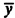
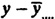

| Previous | Table of Contents | Next |
| TABLE 23.5 ANOVA Table for the Paging Study | |||||
|---|---|---|---|---|---|
| Component | Sum of Squares | Percentage of Variation | Degrees of Freedom | Mean Square | |
| y | 730.01 | 81 | |||
|  | 681.21 | 1 | |||
|  | 48.80 | 100 | 80 | ||
| Main effects | 45.80 | 93.85 | 8 | 5.7 | |
| A | 1.30 | 2 | |||
| D | 6.10 | 2 | |||
| P | 12.30 | 2 | |||
| M | 26.20 | 2 | |||
| First-order interactions | 2.40 | 4.91 | 24 | 0.1 | |
| AD | 0.07 | 4 | |||
| AP | 0.02 | 4 | |||
| AM | 0.03 | 4 | |||
| DP | 0.15 | 4 | |||
| DM | 1.96 | 4 | |||
| PM | 0.14 | 4 | |||
| Second-order interactions | 0.48 | 0.98 | 32 | 0.015 | |
| ADP | 0.05 | 8 | |||
| ADM | 0.13 | 8 | |||
| APM | 0.04 | 8 | |||
| DPM | 0.26 | 8 | |||
| Third-order interaction (ADPM) | 0.07 | 0.14 | 16 | 0.004 | |
| Data from Tsao and Margolin (1971). Reprinted with permission. | |||||
| TABLE 23.6 Interactions between Deck Arrangement and Memory Pages | |||
|---|---|---|---|
| M1 | M2 | M3 | |
| D1 | 0.11 | -0.30 | 0.19 |
| D2 | -0.05 | 0.09 | -0.04 |
| D3 | -0.06 | 0.21 | -0.15 |
where μ is the grand mean; αi, βj, γk, and δl are the main effects of factors A, D, P, and M, respectively; and ξjl is the interaction between D and M. The estimated values of these interactions at various combinations of factors D and M are shown in Table 23.6. The difference between the estimated response using the model and the measured response is the error. The errors in all 81 observations are shown in Table 23.7. A normal quantile-quantile plot of the residuals is shown in Figure 23.1. Notice that the plot is almost a straight line. There is one observation that is significantly away from the line followed by other points. This experiment was repeated to verify that it was not a mistake.
| Previous | Table of Contents | Next |